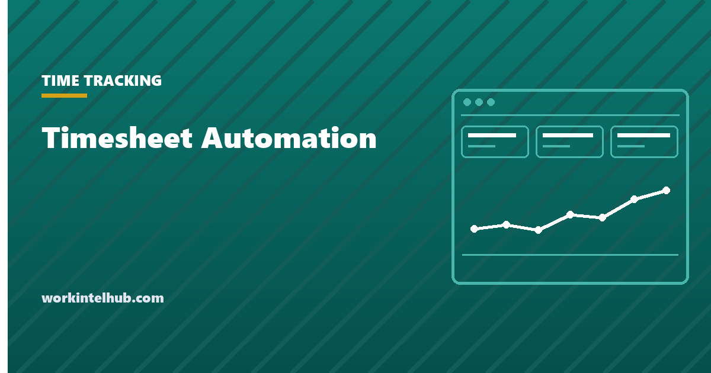

Timesheet Automation

Timesheet automation covers four separate jobs that get sold as one: capturing the hours, chasing the submissions, approving them, and getting them into payroll. They have very different payoffs, and the one most products lead with is the one worth doing last.
This page ranks them by return, says what automation does not fix, and covers the compliance points that follow the process wherever it moves.
The order that pays off
Ranked by hours saved against effort to implement.
| Step | What it removes | Effort | Do it |
|---|---|---|---|
| Payroll export | Manual re-keying, and the errors that come with it | Low | First |
| Reminders and chasing | The recurring administrative tax | Low | Second |
| Validation rules | Corrections found after payroll has run | Medium | Third |
| Approval routing | Sheets sitting in an inbox | Medium | Fourth |
| Automatic time capture | Entry itself | High | Last, if at all |
Payroll export first, because re-keying is both the slowest step and the one where a single transposed digit becomes a pay error. It is also usually a configuration rather than a project.
Automatic capture last, because it is the most invasive, the most expensive, and the one that changes what the timesheet means. An entry a person made is a statement about their work. An entry a machine made is a measurement, and the two are not interchangeable when someone disputes a week.
Validation is the underrated one
Most of the time lost to timesheets is not in filling them in. It is in finding and fixing the wrong ones after they have gone through, which costs a correction cycle and someone's trust in the number.
A short set of checks at submission catches nearly all of it.
- Total hours outside a plausible range for the period.
- A shift crossing midnight that produced a negative or zero duration.
- Overtime on a week whose daily entries do not add up to the total.
- An entry on a day the person was recorded as on leave.
- Hours booked to a closed project or a cost code that no longer exists.
- A duplicate submission for a period already approved.
Each of these is a few lines of logic and each removes a class of correction permanently. This is the step with the best ratio on the list, and the one most often skipped because it is less visible than the others.
What automation does not fix
Three things, and mistaking any of them for a tooling problem is how automation projects disappoint.
A deadline at the wrong time. Automating reminders against a Friday 5pm cutoff automates the chasing rather than removing the reason for it. Move the deadline first, then automate. Our page on timesheet reminders covers the structural causes.
Unclear categories. If people do not know which project a piece of work belongs to, faster entry produces wrong data faster. Fix the list of codes before the form.
Distrust of what the data is for. If people believe the hours are being used to judge them rather than to run payroll and cost projects, automation reads as surveillance and adoption suffers. That is a stated-purpose problem, and it is covered in time tracking for remote employees.
Where automatic capture makes sense, and where it does not
Automatic capture means the system infers hours rather than asking: from app and window activity, from calendar entries, from geofences, or from device login and logout.
It fits work with a clear physical or system boundary. Shift work with a fixed site, field work with defined stops, machine-paced work. In those cases the inference is close to the truth and it removes genuine friction.
It fits knowledge work poorly, for a reason that is not about privacy. The measurable signal and the work diverge. Reading, thinking, a phone call and a whiteboard all register as idle, so the system has to be corrected constantly, which costs more than entering the hours would have. The output is also a poor basis for judgement, which we cover in why productivity metrics fail knowledge teams.
If you do adopt it, the notice obligations are the same as for any monitoring. Connecticut, Delaware and New York require written notice before it starts, set out in our guide to monitoring laws by state, and the acknowledgement wording is in our monitoring consent form.
What stays your responsibility after automation
Automating the process does not move any of the duties. Four survive intact.
- The records are still yours. 29 CFR 516.2 requires the employer to keep hours worked each day and each workweek, whatever produced them.
- Retention still applies. Time records for at least two years under 29 CFR 516.6. Check that the vendor keeps them that long and that you can export them if you leave.
- Rounding still has to be neutral. If the system rounds, 29 CFR 785.48 applies exactly as it did on paper. Find the setting and check which way it rounds.
- Overtime is still weekly. Confirm the workweek is configured to the day and time you actually use, not the vendor's default.
The rounding default is the one to check on day one. Several systems ship with quarter hour rounding enabled, and a default that happens to favour the employer is the same violation as a deliberate one.
Working out whether it is worth it
The calculation is small enough to do on the back of an envelope, and it usually settles the question in one direction or the other quickly.
Admin time: =hours_per_period * periods_per_year * loaded_hourly_cost
Employee entry time: =headcount * minutes_per_period / 60 * periods_per_year * loaded_hourly_cost
Correction cost: =corrections_per_year * hours_per_correction * loaded_hourly_cost
A worked example. Twenty five people, semi-monthly, one hour of administration per period and ten minutes of entry each. That is 24 hours of administration and about 100 hours of entry a year. At a loaded cost of 50 dollars an hour it is roughly 6,200 dollars, before any correction cost.
Automation does not remove all of it. Entry mostly remains, unless you go as far as automatic capture, so the realistic saving is the administration, the chasing and most of the corrections. In this example that is the 24 hours plus whatever the corrections are costing, which is the number to hold a licence fee against.
Two costs that get left out of these sums and should not be. Implementation and data migration, which is usually measured in weeks rather than days for anything touching payroll. And the parallel run, because you will want one payroll cycle processed both ways before you trust the new one.
Questions worth asking a vendor
Six that separate products quickly, and that most demos will not cover unless you ask.
- Which way does rounding default, and can it be turned off entirely?
- Can the workweek start be set to our actual start, including a non-Monday one?
- Does it calculate daily overtime for states that require it?
- Can an employee see and export their own record without asking anyone?
- What does the payroll export look like, and does it match our provider's import format?
- If we leave, what do we get back, and in what format?
The fourth is the one that predicts how the rollout goes. A system people can inspect gets accepted; one they cannot gets treated as something happening to them. The last one is the one people wish they had asked.
Key takeaways
- Automate payroll export first. Re-keying is the slowest step and the one where a single digit becomes a pay error.
- Validation at submission has the best ratio on the list and is the step most often skipped.
- Automatic time capture is the most invasive and least valuable, and belongs last if at all.
- Automation cannot fix a badly timed deadline, unclear project codes, or distrust of what the data is for.
- Automatic capture suits work with a clear physical boundary. It suits knowledge work poorly because the signal and the work diverge.
- The record keeping, retention, rounding and weekly overtime duties all survive automation unchanged.
- Check the rounding default on day one. A default that happens to favour the employer is the same violation as a deliberate one.
- Cost the manual process before shopping. Administration and corrections are what automation removes; entry mostly stays.
Frequently asked questions
What should I automate first in timesheet processing?
The payroll export. Re-keying hours into payroll is the slowest manual step and the one where a single transposed digit becomes a pay error, and connecting the two systems is usually configuration rather than a project.
Is automated time tracking better than manual timesheets?
It depends on the work. Automatic capture fits jobs with a clear physical or system boundary, such as shift work at a fixed site. It fits knowledge work poorly, because reading, thinking and phone calls register as idle and the record has to be corrected so often that it costs more than entering hours would have.
Does automating timesheets change my record keeping obligations?
No. 29 CFR 516.2 requires the employer to keep hours worked each workday and each workweek regardless of what produced the record, and 29 CFR 516.6 requires time records to be kept at least two years. Confirm your vendor retains them that long and that you can export them.
Do automated timesheet systems round hours?
Many do, and several ship with quarter-hour rounding enabled by default. 29 CFR 785.48 applies to an automated system exactly as it does to paper: rounding must run both ways and must not, over time, fail to compensate employees for hours actually worked. Check the default setting before go-live.
Will timesheet automation stop people submitting late?
Only if lateness was caused by the effort of submitting. If it is caused by a deadline at a bad time, unclear project codes, or nobody knowing what the data is for, automation makes the chasing faster without reducing it.
What should I ask a time tracking vendor before buying?
Which way rounding defaults and whether it can be disabled, whether the workweek start is configurable, whether it handles daily overtime states, whether employees can export their own record unaided, what the payroll export format is, and what you get back if you leave.
How do I calculate the ROI of timesheet automation?
Cost the manual process first: administration hours per period, employee entry time, and the cost of corrections, each multiplied out to a year at a loaded hourly rate. Automation removes most of the administration, the chasing and the corrections, but not the entry, so hold the licence fee against that subset rather than the whole figure. Add implementation and one parallel payroll run to the cost side.
Does automatic time capture require employee notice?
Treat it as monitoring, because that is what it is. Connecticut, Delaware, Maine and New York require written notice before electronic monitoring begins, and Delaware and New York require the employee to acknowledge it. Elsewhere notice is not mandated by statute but the rollout goes considerably better with it.